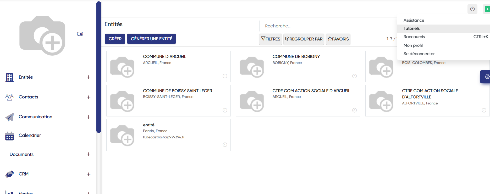
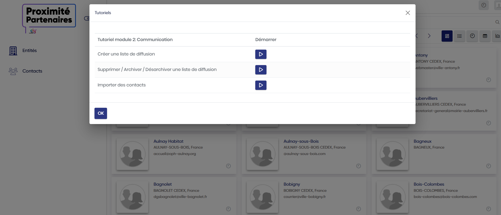
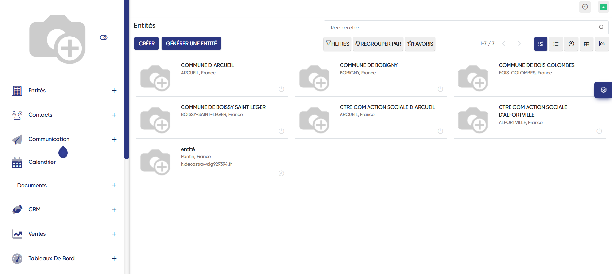
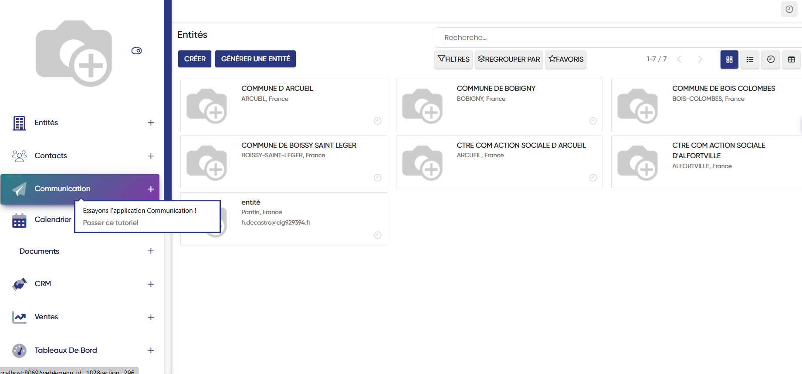
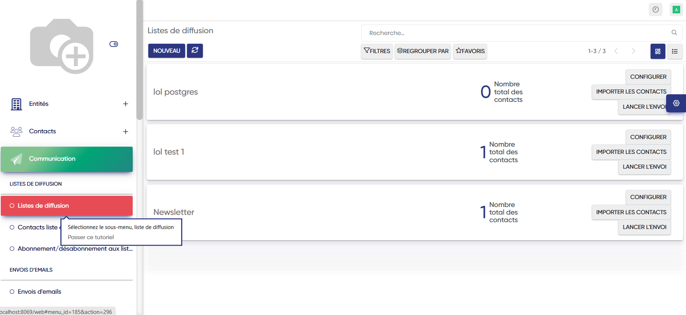
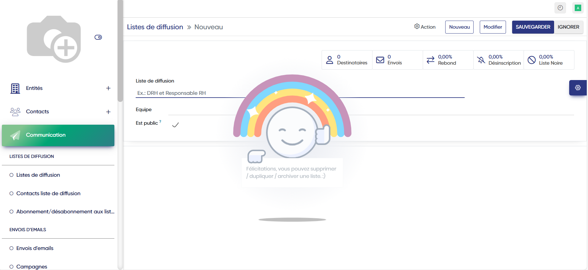
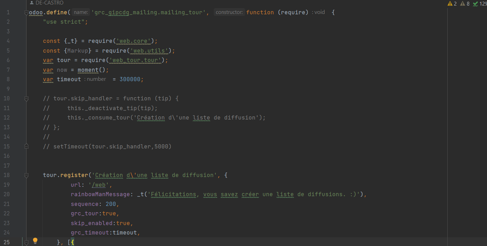
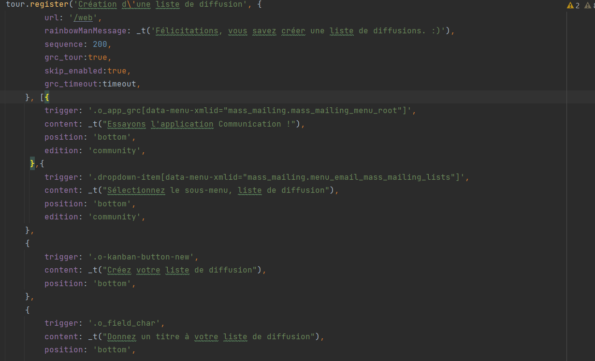

De Castro Hugo
Tutoriel pour les nouveaux utilisateurs
Tutoriels interactifs Odoo (appelés "Tours")Ces tutoriels guidés permettent de découvrir étape par étape les fonctionnalités d’un module Odoo (ex : CRM, ventes, inventaire) directement dans l’interface de l’application.
Intérêt principal :
- Formation rapide des utilisateurs sans besoin de documentation externe.
- Démonstration claire des fonctionnalités pour un jury ou des clients.
- Expérience interactive : l’utilisateur clique et apprend en même temps.
Le nouveau bouton tutoriel se trouve dans la partie profil et ce présente ainsi:

Lors du clique ce menu se présente:

Lorsque l'on choisit un tutoriel, alors cette goute apparaît:

Lorsque l'on survol cette goute alors la tache à efffectuer apparaît (il y a la possibilité de passer le tutoriel si l'utilisateur ne souhaite finalement pas le faire ):

Après le clique sur la tache demandé alors une nouvelle goutte apparaît pour poursuivre le tutoriel :

Lorsque le tutoriel est terminé cette animation apparait indiquant la fin du tutoriel :

Voici le code associé à ces tours, ce code montré est pour le tutoriel "Création d'une liste de diffusion":

